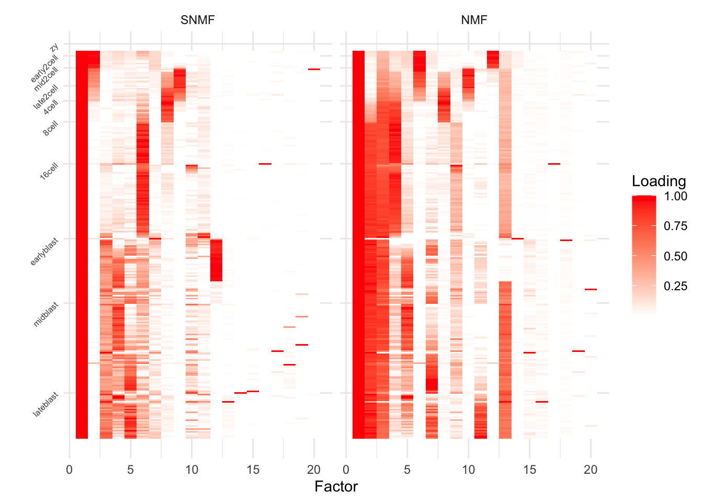
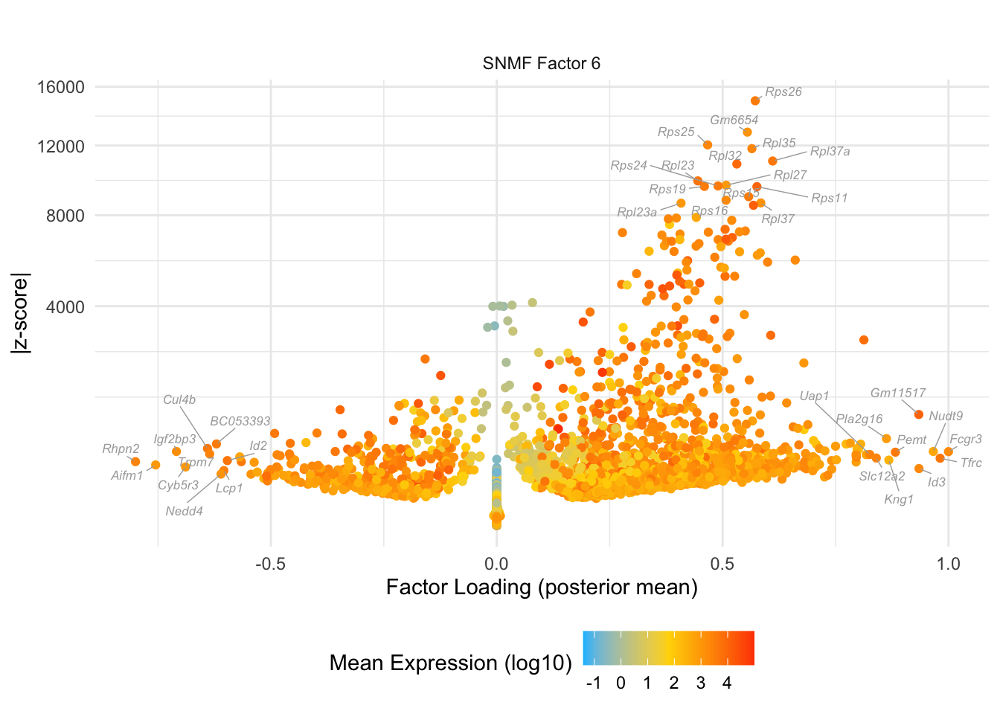
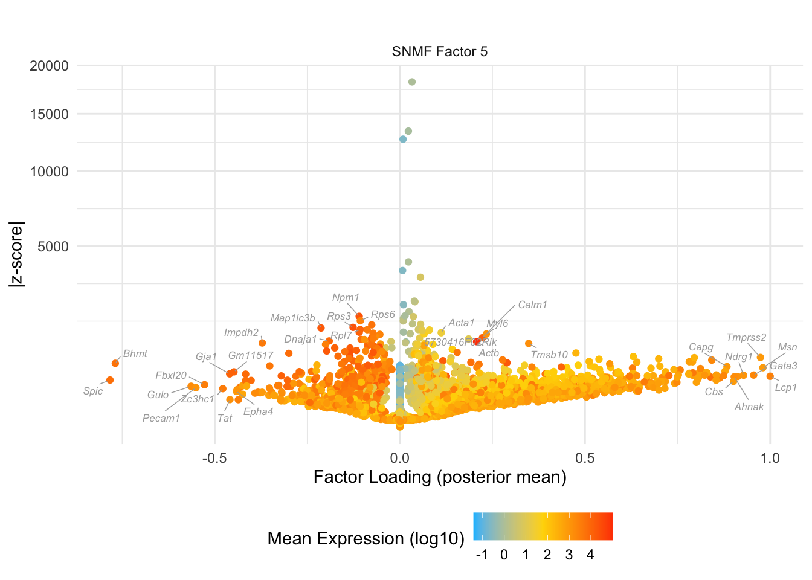

Deng et al. dataset: nonnegative fits
Jason Willwerscheid
3/28/2022
Last updated: 2022-04-01
Checks: 7 0
Knit directory: scFLASH/
This reproducible R Markdown analysis was created with workflowr (version 1.6.2). The Checks tab describes the reproducibility checks that were applied when the results were created. The Past versions tab lists the development history.
Great! Since the R Markdown file has been committed to the Git repository, you know the exact version of the code that produced these results.
Great job! The global environment was empty. Objects defined in the global environment can affect the analysis in your R Markdown file in unknown ways. For reproduciblity it’s best to always run the code in an empty environment.
The command set.seed(20181103) was run prior to running the code in the R Markdown file. Setting a seed ensures that any results that rely on randomness, e.g. subsampling or permutations, are reproducible.
Great job! Recording the operating system, R version, and package versions is critical for reproducibility.
Nice! There were no cached chunks for this analysis, so you can be confident that you successfully produced the results during this run.
Great job! Using relative paths to the files within your workflowr project makes it easier to run your code on other machines.
Great! You are using Git for version control. Tracking code development and connecting the code version to the results is critical for reproducibility.
The results in this page were generated with repository version e51fee2. See the Past versions tab to see a history of the changes made to the R Markdown and HTML files.
Note that you need to be careful to ensure that all relevant files for the analysis have been committed to Git prior to generating the results (you can use wflow_publish or wflow_git_commit). workflowr only checks the R Markdown file, but you know if there are other scripts or data files that it depends on. Below is the status of the Git repository when the results were generated:
Ignored files:
Ignored: .DS_Store
Ignored: .Rhistory
Ignored: .Rproj.user/
Ignored: code/initialization/
Ignored: data-raw/10x_assigned_cell_types.R
Ignored: data/.DS_Store
Ignored: data/10x/
Ignored: data/Ensembl2Reactome.txt
Ignored: data/droplet.rds
Ignored: data/mus_pathways.rds
Ignored: output/backfit/
Ignored: output/final_montoro/
Ignored: output/lowrank/
Ignored: output/prior_type/
Ignored: output/pseudocount/
Ignored: output/pseudocount_redux/
Ignored: output/size_factors/
Ignored: output/var_reg/
Ignored: output/var_type/
Untracked files:
Untracked: analysis/NBapprox.Rmd
Untracked: analysis/final_pbmc.Rmd
Untracked: analysis/trachea4.Rmd
Untracked: code/alt_montoro/
Untracked: code/final_pbmc/
Untracked: code/missing_data.R
Untracked: code/prior_type/priortype_fits_pbmc.R
Untracked: code/pseudocount_redux/pseudocount_fits_pbmc.R
Untracked: code/pulseseq/
Untracked: code/size_factors/sizefactor_fits_pbmc.R
Untracked: code/trachea4.R
Untracked: mixsqp_fail.rds
Untracked: output/alt_montoro/
Untracked: output/deng/
Untracked: output/final_pbmc/
Untracked: output/pbmc/
Untracked: output/pulseseq_fit.rds
Untracked: tmp.txt
Unstaged changes:
Modified: code/deng/deng2.R
Modified: code/utils.R
Modified: data-raw/pbmc.R
Note that any generated files, e.g. HTML, png, CSS, etc., are not included in this status report because it is ok for generated content to have uncommitted changes.
These are the previous versions of the repository in which changes were made to the R Markdown (analysis/deng_nn.Rmd) and HTML (docs/deng_nn.html) files. If you’ve configured a remote Git repository (see ?wflow_git_remote), click on the hyperlinks in the table below to view the files as they were in that past version.
| File | Version | Author | Date | Message |
|---|---|---|---|---|
| Rmd | e51fee2 | Jason Willwerscheid | 2022-04-01 | workflowr::wflow_publish(“analysis/deng_nn.Rmd”) |
| html | c1aab04 | Jason Willwerscheid | 2022-03-30 | Build site. |
| Rmd | 6bba1ed | Jason Willwerscheid | 2022-03-30 | wflow_publish(“analysis/deng_nn.Rmd”) |
| html | 769dadc | Jason Willwerscheid | 2022-03-29 | Build site. |
| html | c322aa6 | Jason Willwerscheid | 2022-03-28 | Build site. |
| Rmd | 7b976cf | Jason Willwerscheid | 2022-03-28 | workflowr::wflow_publish(“analysis/deng_nn.Rmd”) |
Overview
library(tidyverse)
#> ── Attaching packages ─────────────────────────────────────── tidyverse 1.3.1 ──
#> ✓ ggplot2 3.3.5 ✓ purrr 0.3.4
#> ✓ tibble 3.1.6 ✓ dplyr 1.0.8
#> ✓ tidyr 1.2.0 ✓ stringr 1.4.0
#> ✓ readr 2.0.0 ✓ forcats 0.5.1
#> ── Conflicts ────────────────────────────────────────── tidyverse_conflicts() ──
#> x dplyr::filter() masks stats::filter()
#> x dplyr::lag() masks stats::lag()
library(flashier)
#> Loading required package: magrittr
#>
#> Attaching package: 'magrittr'
#> The following object is masked from 'package:purrr':
#>
#> set_names
#> The following object is masked from 'package:tidyr':
#>
#> extract
library(singleCellRNASeqMouseDeng2014)
#> Loading required package: Biobase
#> Loading required package: BiocGenerics
#> Loading required package: parallel
#>
#> Attaching package: 'BiocGenerics'
#> The following objects are masked from 'package:parallel':
#>
#> clusterApply, clusterApplyLB, clusterCall, clusterEvalQ,
#> clusterExport, clusterMap, parApply, parCapply, parLapply,
#> parLapplyLB, parRapply, parSapply, parSapplyLB
#> The following objects are masked from 'package:dplyr':
#>
#> combine, intersect, setdiff, union
#> The following objects are masked from 'package:stats':
#>
#> IQR, mad, sd, var, xtabs
#> The following objects are masked from 'package:base':
#>
#> anyDuplicated, append, as.data.frame, basename, cbind, colMeans,
#> colnames, colSums, dirname, do.call, duplicated, eval, evalq,
#> Filter, Find, get, grep, grepl, intersect, is.unsorted, lapply,
#> lengths, Map, mapply, match, mget, order, paste, pmax, pmax.int,
#> pmin, pmin.int, Position, rank, rbind, Reduce, rowMeans, rownames,
#> rowSums, sapply, setdiff, sort, table, tapply, union, unique,
#> unsplit, which, which.max, which.min
#> Welcome to Bioconductor
#>
#> Vignettes contain introductory material; view with
#> 'browseVignettes()'. To cite Bioconductor, see
#> 'citation("Biobase")', and for packages 'citation("pkgname")'.
library(Rtsne)
library(ggrepel)
# library(fastTopics)
counts <- exprs(Deng2014MouseESC)
meta_data <- pData(Deng2014MouseESC)
gene_names <- rownames(counts)
preprocess <- function(dat, min.nzcts = 10) {
size.factors <- colSums(dat)
size.factors <- size.factors / mean(size.factors)
gene_cts <- rowSums(dat > 0)
dat <- dat[gene_cts >= min.nzcts, ]
lunpc <- max(1 / min(size.factors) - 1 / max(size.factors), 1)
fl.dat <- log1p(t(t(dat) / size.factors) / lunpc)
return(list(
dat = dat,
fl.dat = fl.dat,
size.factors = size.factors,
excluded.genes = gene_cts < min.nzcts)
)
}
Deng <- preprocess(counts)I give semi-nonnegative and non-negative flashier fits to the Deng et al. dataset (see here for an introduction). For both, I added factors greedily. I used point-exponential priors for factors and point-Laplace or point-exponential priors for loadings. I also fix a “mean factor” (shown as factor 1 below).
snmf <- readRDS("./output/deng/snmf.rds")
nmf <- readRDS("./output/deng/nmf.rds")
snmf$fl <- flash.reorder.factors(snmf$fl, c(1, order(snmf$fl$pve[-1], decreasing = TRUE) + 1))
#> Warning in ebnm_workhorse(x = x, s = s, mode = mode, scale = scale, g_init =
#> g_init, : Since they're not well defined for nonzero modes, local false sign
#> rates won't be returned.
nmf$fl <- flash.reorder.factors(nmf$fl, c(1, order(nmf$fl$pve[-1], decreasing = TRUE) + 1))
#> Warning in ebnm_workhorse(x = x, s = s, mode = mode, scale = scale, g_init =
#> g_init, : Since they're not well defined for nonzero modes, local false sign
#> rates won't be returned.
get.factors <- function(res, colnames.prefix) {
FF <- ldf(res$fl, type = "I")$F
colnames(FF) <- paste0(colnames.prefix, 1:ncol(FF))
return(FF)
}
snmf.F <- get.factors(snmf, "SNMF")
nmf.F <- get.factors(nmf, "NMF")
tib <- cbind(snmf.F, nmf.F)
tsne_res <- Rtsne(
tib,
dims = 1,
perplexity = pmax(1, floor((nrow(tib) - 1) / 3) - 1),
pca = FALSE,
normalize = FALSE,
theta = 0.1,
check_duplicates = FALSE,
verbose = FALSE
)$Y[, 1]
tib <- as_tibble(tib) %>%
mutate(tsne_res = unlist(tsne_res)) %>%
mutate(Cell.type = fct_relevel(meta_data$cell_type, c(
"zy",
"early2cell", "mid2cell", "late2cell",
"4cell", "8cell", "16cell",
"earlyblast", "midblast", "lateblast"
)))
tsne.zy <- tib %>% filter(Cell.type == "zy") %>% summarize(mean(tsne_res))
tsne.late <- tib %>% filter(Cell.type == "lateblast") %>% summarize(mean(tsne_res))
if (tsne.zy < tsne.late) {
tib <- tib %>%
arrange(Cell.type, tsne_res)
} else {
tib <- tib %>%
arrange(Cell.type, -tsne_res)
}
tib <- tib %>%
mutate(Cell.idx = row_number()) %>%
select(-tsne_res)
tib <- tib %>%
pivot_longer(
-c(Cell.idx, Cell.type),
names_to = "Factor",
values_to = "Loading",
values_drop_na = TRUE
) %>%
mutate(
Fit = factor(str_remove(Factor, "[0-9]+"), levels = c("SNMF", "NMF")),
Factor = as.numeric(str_extract(Factor, "[0-9]+"))
)
cell_type <- tib %>% group_by(Cell.idx) %>% summarize(Cell.type = Cell.type[1]) %>% pull(Cell.type)
cell_type_breaks <- c(-4, which(cell_type[2:nrow(tib)] != cell_type[1:(nrow(tib) - 1)]))
ggplot(tib, aes(x = Factor, y = -Cell.idx, fill = Loading)) +
geom_tile() +
scale_fill_gradient(low = "white", high = "red") +
labs(x = "Factor", y = "") +
scale_y_continuous(breaks = -cell_type_breaks,
minor_breaks = NULL,
labels = levels(tib$Cell.type)) +
theme_minimal() +
theme(axis.text.y=element_text(angle = 45, size = 6)) +
facet_wrap(~Fit, nrow = 2)
Factors
I’ve tried to group together factors that are very similar for ease of comparison. The headers roughly indicate the embryonic stage where the factors are active.
do.volcano.plot <- function(nmf.k = 0, snmf.k = 0, plt.title = "") {
make.tib <- function(fit, fl, k) {
if (k == 0) {
return(tibble())
}
tib <- tibble(
fit = fit,
pm = ldf(fl, type = "I")$L[, k],
z = abs(fl$L.pm[, k]) / pmax(sqrt(.Machine$double.eps), fl$L.psd[, k]),
exprmean = log10(rowMeans(Deng$dat)),
SYMBOL = rownames(fl$L.pm)
) %>%
mutate(SYMBOL = ifelse(
z * (abs(pm) > 0.1) > sort(z * (abs(pm) > 0.1), decreasing = TRUE)[16] |
(pm > 0.1 & pm > sort(pm, decreasing = TRUE)[11]) |
(pm < -0.1 & pm < sort(pm, decreasing = FALSE)[11]),
SYMBOL,
""
)) %>%
mutate(fit = paste(fit, "Factor", k))
return(tib)
}
nmf.tib <- make.tib("NMF", nmf$fl, nmf.k)
snmf.tib <- make.tib("SNMF", snmf$fl, snmf.k)
tib <- nmf.tib %>% bind_rows(snmf.tib)
plt <- ggplot(tib, aes(x = pm, y = z, color = exprmean, label = SYMBOL)) +
geom_point() +
scale_color_gradient2(low = "deepskyblue", mid = "gold", high = "orangered",
na.value = "gainsboro",
midpoint = mean(range(tib$exprmean))) +
scale_y_sqrt() +
geom_text_repel(color = "darkgray",size = 2.25, fontface = "italic",
segment.color = "darkgray", segment.size = 0.25,
min.segment.length = 0, na.rm = TRUE, max.overlaps = 20) +
theme_minimal() +
labs(
x = "Factor Loading (posterior mean)",
y = "|z-score|",
color = "Mean Expression (log10)",
title = plt.title
) +
theme(legend.position = "bottom") +
facet_wrap(~fit, scales = "free", ncol = 1)
return(plt)
}Zygote to mid 2cell
do.volcano.plot(0, 2)
#> Warning: ggrepel: 1 unlabeled data points (too many overlaps). Consider
#> increasing max.overlapsdo.volcano.plot(6, 0)do.volcano.plot(2, 0, "(All but zygote to mid 2cell)")do.volcano.plot(3, 0, "(All but zygote to mid 2cell)")Mid to late 2cell
do.volcano.plot(0, 9)
#> Warning: ggrepel: 3 unlabeled data points (too many overlaps). Consider
#> increasing max.overlapsdo.volcano.plot(10, 0)Late 2cell / 4cell
do.volcano.plot(0, 8)
#> Warning: ggrepel: 1 unlabeled data points (too many overlaps). Consider
#> increasing max.overlaps
do.volcano.plot(8, 0)8cell / 16cell
do.volcano.plot(0, 6)
do.volcano.plot(4, 0)Early blastocyte
do.volcano.plot(0, 12)
#> Warning: ggrepel: 5 unlabeled data points (too many overlaps). Consider
#> increasing max.overlapsdo.volcano.plot(13, 0, "All but early blastocyte")Blastocytes
do.volcano.plot(0, 3)
#> Warning: ggrepel: 4 unlabeled data points (too many overlaps). Consider
#> increasing max.overlapsdo.volcano.plot(0, 5)
#> Warning: ggrepel: 4 unlabeled data points (too many overlaps). Consider
#> increasing max.overlaps
do.volcano.plot(0, 4)
#> Warning: ggrepel: 14 unlabeled data points (too many overlaps). Consider
#> increasing max.overlapsdo.volcano.plot(7, 0)do.volcano.plot(5, 0)All over
do.volcano.plot(0, 10)
#> Warning: ggrepel: 1 unlabeled data points (too many overlaps). Consider
#> increasing max.overlapsdo.volcano.plot(9, 0)NMF-only factors
do.volcano.plot(12, 0, "Zygote / Early 2cell")do.volcano.plot(11, 0, "Late Blastocytes")
sessionInfo()
#> R version 3.5.3 (2019-03-11)
#> Platform: x86_64-apple-darwin15.6.0 (64-bit)
#> Running under: macOS Mojave 10.14.6
#>
#> Matrix products: default
#> BLAS: /Library/Frameworks/R.framework/Versions/3.5/Resources/lib/libRblas.0.dylib
#> LAPACK: /Library/Frameworks/R.framework/Versions/3.5/Resources/lib/libRlapack.dylib
#>
#> locale:
#> [1] en_US.UTF-8/en_US.UTF-8/en_US.UTF-8/C/en_US.UTF-8/en_US.UTF-8
#>
#> attached base packages:
#> [1] parallel stats graphics grDevices utils datasets methods
#> [8] base
#>
#> other attached packages:
#> [1] ggrepel_0.9.1 Rtsne_0.15
#> [3] singleCellRNASeqMouseDeng2014_0.99.0 Biobase_2.42.0
#> [5] BiocGenerics_0.28.0 flashier_0.2.32
#> [7] magrittr_2.0.2 forcats_0.5.1
#> [9] stringr_1.4.0 dplyr_1.0.8
#> [11] purrr_0.3.4 readr_2.0.0
#> [13] tidyr_1.2.0 tibble_3.1.6
#> [15] ggplot2_3.3.5 tidyverse_1.3.1
#> [17] workflowr_1.6.2
#>
#> loaded via a namespace (and not attached):
#> [1] fs_1.5.0 lubridate_1.7.10 httr_1.4.2 rprojroot_2.0.2
#> [5] tools_3.5.3 backports_1.1.3 bslib_0.3.1 utf8_1.2.2
#> [9] R6_2.5.1 irlba_2.3.3 DBI_1.0.0 colorspace_2.0-3
#> [13] withr_2.5.0 tidyselect_1.1.2 compiler_3.5.3 git2r_0.28.0
#> [17] cli_3.2.0 rvest_1.0.0 xml2_1.3.2 labeling_0.4.2
#> [21] horseshoe_0.2.0 sass_0.4.0 scales_1.1.1 SQUAREM_2021.1
#> [25] mixsqp_0.3-43 digest_0.6.29 rmarkdown_2.11 deconvolveR_1.2-1
#> [29] pkgconfig_2.0.3 htmltools_0.5.2 highr_0.9 dbplyr_2.1.1
#> [33] fastmap_1.1.0 invgamma_1.1 rlang_1.0.2 readxl_1.3.1
#> [37] rstudioapi_0.13 farver_2.1.0 jquerylib_0.1.4 generics_0.1.2
#> [41] jsonlite_1.8.0 Matrix_1.3-4 Rcpp_1.0.8 munsell_0.5.0
#> [45] fansi_1.0.2 lifecycle_1.0.1 stringi_1.4.6 whisker_0.3-2
#> [49] yaml_2.3.5 grid_3.5.3 promises_1.2.0.1 crayon_1.5.0
#> [53] lattice_0.20-38 haven_2.3.1 splines_3.5.3 hms_1.1.1
#> [57] knitr_1.33 pillar_1.7.0 softImpute_1.4-1 reprex_2.0.0
#> [61] glue_1.6.2 evaluate_0.14 trust_0.1-8 modelr_0.1.8
#> [65] vctrs_0.3.8 tzdb_0.1.1 httpuv_1.5.2 cellranger_1.1.0
#> [69] gtable_0.3.0 ebnm_1.0-11 assertthat_0.2.1 ashr_2.2-54
#> [73] xfun_0.29 broom_0.7.6 later_1.3.0 truncnorm_1.0-8
#> [77] ellipsis_0.3.2